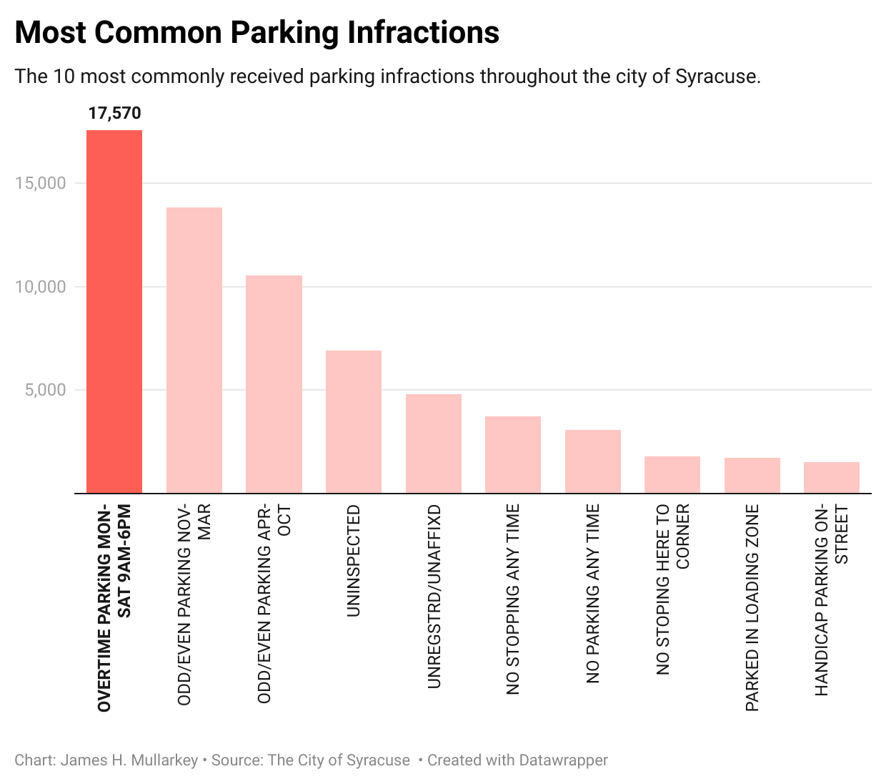
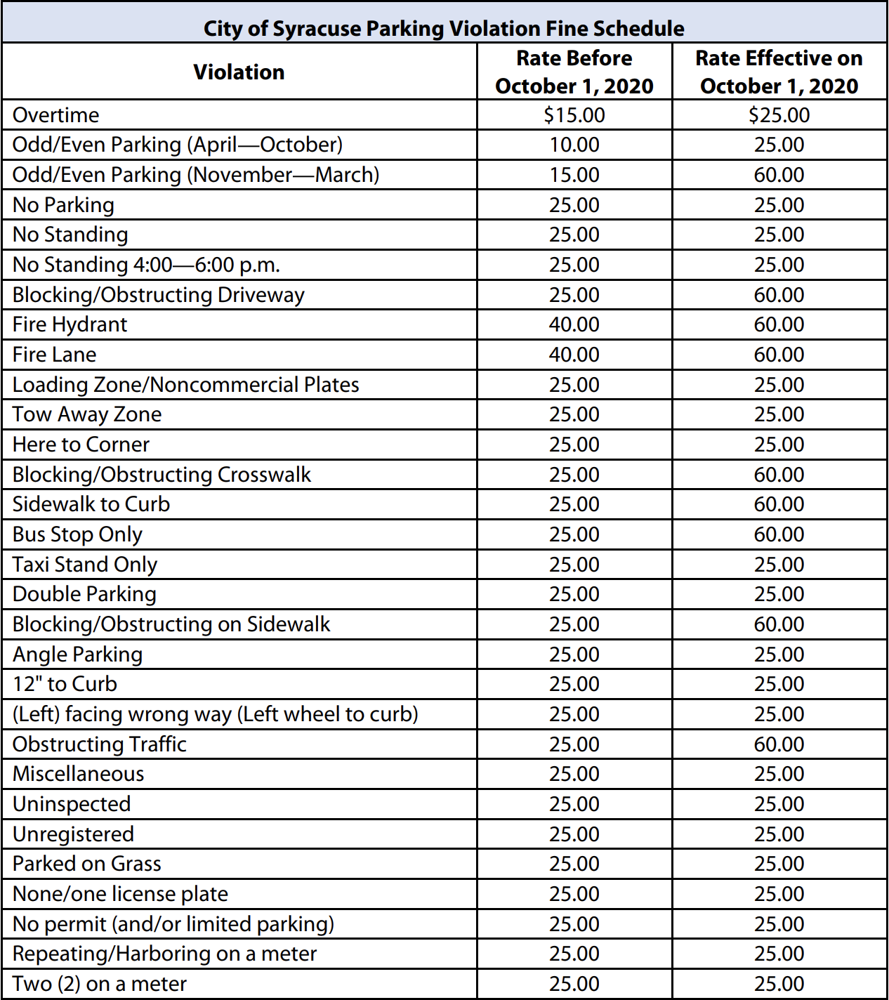

Ticket Tsunami: Over 60,000 Reasons to Reevaluate the Syracuse Parking System:
The streets of Syracuse New York saw over 62,000 parking tickets issued during 2023, resulting in over 2 million dollars’ worth of fines and penalties. This figure is on top of the more than 2 million taxpayers fed into the meters as well as another 2 million in revenue garnered by city garages and city owned parking lots.
Alexander Marion, Syracuse City Auditor, recently published a 115-page audit report
115-page audit report on what he called an “eye popping” number of tickets.
“Benjamin Franklin once remarked the only constants in life are death and taxes. For Syracuse drivers, we can add a third: parking tickets. With more than 60,000 issued in 2023, they are omnipresent on windshields across our city,” Marion wrote.
The data I studied is part of an ever-growing publicly available dataset containing ticket numbers as well as issued date, location description, status, and amount. The data set has over 75,000 rows of tickets issued between January 1st 2023 and May 1st 2024.
The enforcement of parking, and its subsequent tickets in Syracuse has always been a contentious issue, impacting residents, visitors, and the town's massive student population. This analysis aims to shed light on the effectiveness of parking policies, the behavior of drivers in Syracuse, and the financials of parking fines.
Most Common Violation Locations:

The data visualization above highlights several parking hotspots throughout the city. The top location, along with five other streets, surrounds Syracuse University. This visual provides insights into the habits of drivers and the patterns of enforcement personnel. It may seem normal to many that the area around the university records the most tickets given its daily influx of students, faculty, university support staff, and visitors.
This data could be extremely useful to city officials for future urban planning initiatives. While most of the community recognizes the importance of parking regulations, these findings could prompt a deeper investigation into whether the current parking supply meets demand, particularly in the university neighborhood.
Community Concerns
It is important to consider the community’s thoughts when discussing parking enforcement methods that are being utilized city wide. Amongst the most frequent criticisms was a frustration with the parking infrastructure itself. The now digitalized parking meters that have been implemented throughout the city tend to be finicky at best.
Stuart Larose, a local Syracuse resident, expressed a common frustration.
“The machines that you can purchase the tickets from, especially with the app, do not work well regularly. They're often out of order, so you try to buy it on your phone or whatever, and it doesn't want to work.”
Technological failures not only inconvenience drivers, often heightening the number of tickets, but they also hint at a bigger picture of the systemic issues of the city’s parking management system.
Opinions like Stuarts highlight a gap in the city’s move to modernize parking. In a time where digital solutions are often celebrated, the Syracuse city parking payment system seems to lag, only causing a disconnect between the city’s intentions and the everyday experience of parking users.
Most Common Infractions

Amidst the high number of parking tickets, certain violations emerge as the most common. As seen above, “Overtime Parking Mon-Sat 9AM-6PM” leads the pack with 17,570. This is significantly higher than any other infraction. This is due to the sheer number of metered parking spaces in the city, both downtown and in the university neighborhood.
Another notable violation is the “Odd/Even Parking”; these infractions tended to happen more on streets in the university neighborhood. These fines increase during the winter months due to the amount of snow in Syracuse, as it is frequently impossible for emergency vehicles to pass through already skinnier streets due to snow piles and cars parked on both sides.

Source: Park at Your Own Risk Report" by Alexander Marion MPA
The Finances, Is it Fair?
The financial implications of Syracuse’s parking system are significant. With over two million dollars in fines collected by the city, its big business.
However, on the other side of that is a system that often places residents in financial strain. Most residents agree that parking laws are necessary, and begrudgingly agree the fines that come with these laws are expected.
Downtown Syracuse resident, Maren King believes that if you do the crime, you should do the time.
“If you're breaking the law, and you're taking up a parking space that has a specific time frame on it, the reason for that is so that other people can park there, and to make revenue for the city that maintains the streets. I think they (the fees) are fair.”
As recently as 2020, the city of Syracuse set up an amnesty program for its parking fines. Residents were able to pay any late tickets without the accumulated late fees. The city expected that between $500,000 and 1 million dollars in revenue would be generated from the then 200,000 outstanding tickets. Normally, tickets that have gone unpaid for more than 90 days result in the vehicle being either booted or towed. This most recent amnesty program lasted 17 days.
Navigating Forward
Updating this publicly available dataset is essential to further dialogue between Syracuse city officials and citizens as both sides navigate the future of the parking system in Syracuse. In his audit, Alexander Marion outlined some administrative and enforcement recommendations he and his team feel are essential to bettering the system:
Administrative Recommendations
- "Create a new Department of Parking and Mobility charged with creating a comprehensive parking plan and enforcement strategy."
- "Consider new pricing strategies around surge pricing, zone pricing, and special events."
- "Make improvements to the public parking dataset."
Enforcement Recommendations
- "Increase parking checkers, stagger schedules, and improve supervision."
One recommendation many offenders may appreciate is considering an "alternative fines program".
Marion notes, "Allowing drivers, especially first-time offenders, to participate in an alternative to fines program to satisfy their parking violations is worthy of further exploration. Providing options like community service or driver education courses instead of paying a fine may result in higher levels of satisfaction and better parking compliance."
This is an acknowledgment that the added costs of parking infractions may be particularly burdensome for people in low-income communities. With the penalties for nonpayment being so steep, sometimes a simple parking ticket can snowball into a much worse situation.